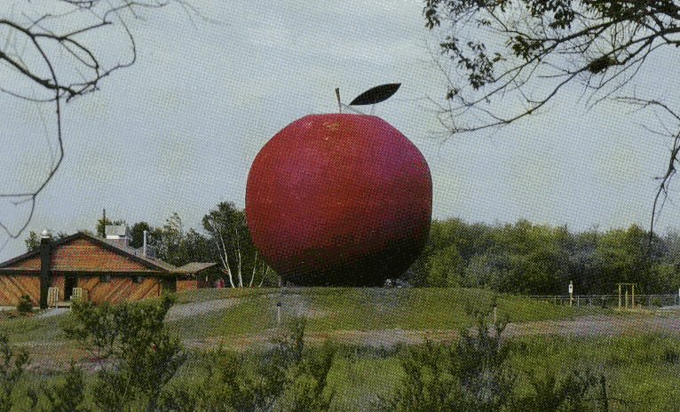

NEWS & TELEGRAPH
THE
BIG APPLE

NEWS & TELEGRAPH
Wednesday, May 31st of the Year of the Crazy Carpet of Funny Smell
|
Colborne - Le Shérif en chef du canton autonome de Cramahe a informé la presse que la BASA (Big Apple Space Agency) appliquait un démenti formel à toute allégation voulant que les plans de la fusée MI-3 aient été transmis au gouvernement du Bangladesh. Selon un communiqué de presse de la BASA, "le fait que Schefferville ait signalé ce matin que trois unités de défenses balistiques thermo-nucléaires avaient été réalignées en direction de notre canton n'a rien à voir avec notre position". Comme on le sait, le canton de Colborne s'est vu octroyer le statut de région autonome depuis le dernier voyage de l'Empereur |
dans le fameux parc thématique de l'endroit au cours duquel le Souverain s'était déclaré enchanté de la qualité gastronomique des spécialités locales, notamment la tarte aux oreilles de lapin et le smoked meat à l'oxygène. On s'atend
à que les autorités impériales se montrent satisfaites
de cette prise de position et que les ogives thermonucléaires soient
rempla-cées par des cartouches de CPET (cyanure de potassium à
expansion thermique), ce qui serait perçu par l'ensemble de la
communauté pacifiée comme étant une volonté
d'assouplissement rassurante.
|
